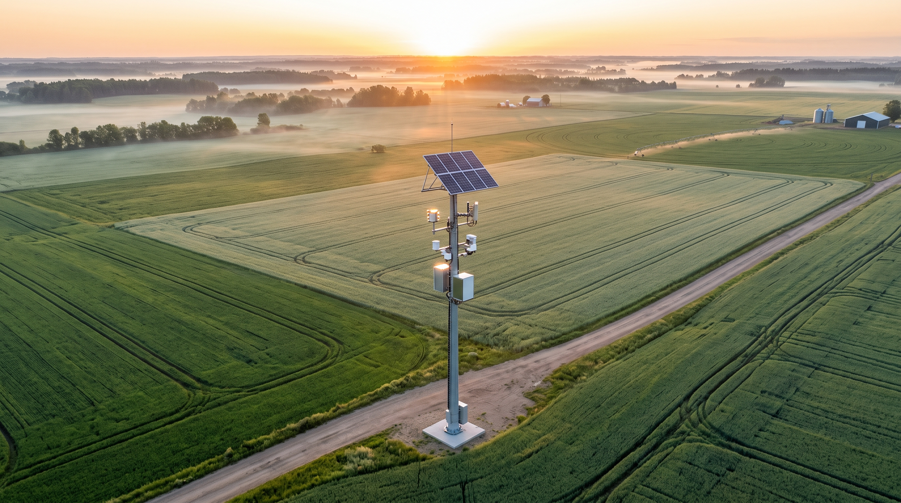

📡 Merkez İstasyon: Polatlı / İç Anadolu Örnek İşletmesi (186 Hektar)
Akıllı Tarım Alanı ve Bitki Koruma Kontrol Paneli
Güneş enerjili kontrol direklerinden gelen yapay zekâ destekli canlı tespitlerini inceleyin, yararlı böcek türlerini koruma altına alın ve bitki sağlığına yönelik müdahaleleri 4 aşamalı uzman onayıyla güvenle yönetin.

Haftalık Canlı Tespitleri ve Risk Dağılımı
Son 7 gündeki zararlı risk sınıfları ile yararlı tür tespitlerinin karşılaştırması
Kontrol Direkleri Durum Dağılımı
Aktif, çevrim dışı ve bakımdaki saha direkleri
Son Tespit Edilen Canlılar ve Tespit Zamanları
Kontrol direklerinden gelen son 5 yapay zekâ sınıflandırma kaydı
| Canlı Türü / Sınıfı | Direk | Tespit Zamanı | YZ Güven | Bitki Riski | Durum | İşlem |
|---|
Tarım Alanlarının Genel Durumu
Parsel bazlı ürün evresi, nem ve tahmini risk özeti
Son Sistem Olayları ve Bildirimler
Direk bağlantı uyarıları, tespit alarmları ve işlem kayıtları